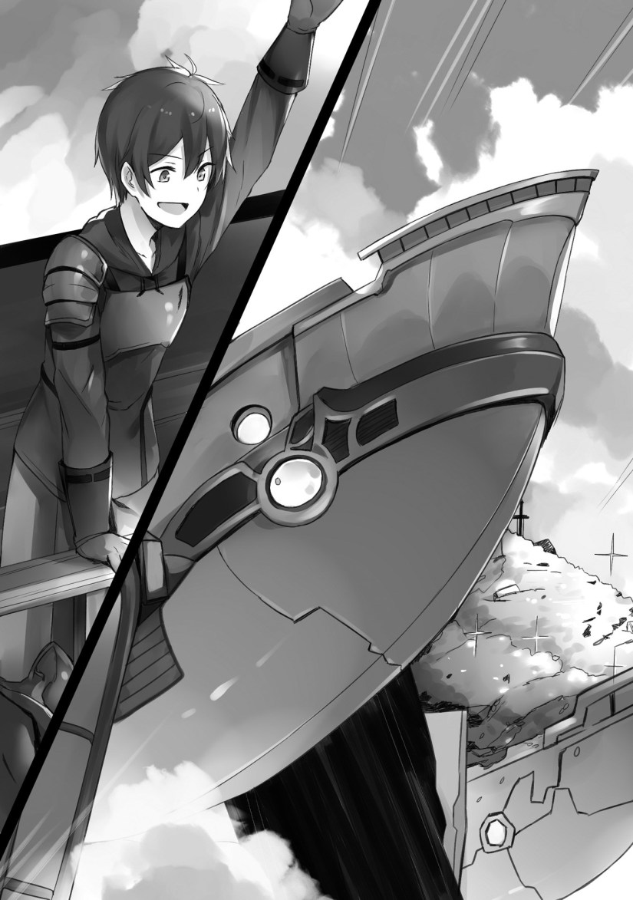

There’s an electrical discharge from all sorts of parts, revealing that it was in a pretty bad condition. Black fumes rose from the gaps in the armor.
However, I could hear an electronic sound──a robotic voice.
[…Are you trying to use me? That’s impossible.]
The robot isn’t moving, it was the the control panel within the room that booted up. In the game, it was possible to register yourself as the master for this thing.
“How annoying. I only came here to get a microtransaction item. Just be silent and abide.”
I don’t know if the microtransaction item I bought is here or not. However, there’s no future for me or this world if I don’t obtain it.
[I will choose to self-destruct rather than have the new human race snatch things away.]
“If you’re going to self-destruct, then I’ll take you under my control. An explosion would also be annoying. I’m not here to die.”
While performing my operations, I change the alphabet letters on the screen to Japanese.
“What a nice convenience! This will make things easier to operate.”
I spoke in Japanese, the language that I had long missed.
The goal is right in front of me…the thing I’m here to accomplish is just a little bit ahead, making my tension rise.
I carried out my actions, then what opened on part of the control panel was the register for the spaceship’s owner, the master.
Guidelines that indicated where to put my hands lit up.
[Japanese…? You can read it? You people shouldn’t be able to use Japanese.]
Listening carefully, the sound was coming from the speaker in the room. It seems it wasn’t coming from the robot.
It appeared that the robot had an interest in me.
I cracked a joke while placing my hands on the control panel.
“My soul is of a genuine Japanese person. Justice for me is rice and miso soup every morning. Well, I’ve never eaten those here, though.──Perhaps you didn’t know what I just said, actually.”
This thing probably won’t understand even if I introduce myself as a reincarnated person. I think that if I say such a thing to other people, they’ll make a bitter smile while taking a distance from me.
[Soul? Is this the concept of transmigration?]
“So you do understand what I’m saying? Right, that’s what it is. Probably.”
I feel a bit glad having a conversation in Japanese after such a long time.
The control panel checked my genetic information from my palms, the registration for the master finished, and then began scanning as my whole body was wrapped in a red light.
As soon as the scan finished, the robot asked me another question.
[It’s confirmed from your genetic information that there are indeed traces of a Japanese individual. However, you are of the new humans. At the same time, you have inherited the genes of the the former humans. How perplexing. It is not feasible.]
“Is that so? Though, with this, the ship is mine now, right?”
[Indeed. From today, this spaceship is your property. Do you want to name it?]
I think for a bit.
Naming it wasn’t something I could do in the game.
“I can’t think of a good name. In the game, it was ‘Luxon’ though.”
[Luxon…it has been documented.]
“So you’re not going to self-destruct. That’s a relief.”
Being extremely exhausted, I sat down on the spot after everything was over. I was able to hazily see the room through the smoke that came from the battle.
I held the rifle in my hands, along with its wooden stock──the gun’s stock had detached.
When it’s like this, I can’t use it without repairing it.
“The present from my parents is battered.”
I sighed while staring up at the ceiling.
[If you have the soul of a Japanese person, does that mean you have memories of the war?]
“The war? I don’t have any. In the first place, I was born during a period of peace, and I was an office worker there. I don’t have any experiences of war…Now that I think about it, my previous life was quite the blessing.”
Even now I miss my previous world…I want to go back to it if I can.
The smoke gradually cleared up, likely due to the ventilation in the room.
It seems that what I wanted was someone to talk about my story to. I told the details of my reincarnation to my AI partner.
“So do you get it? This insane world is the world of an otome game.”
[Otome game?]
“It’s something like a love simulation game.”
I talked about how it started──the time period it was, and how I came to reincarnate. Then, I talked about how this world is that otome game world.
“Surprised?”
[I am impressed by your delusions. However, you speaking Japanese is not something that can come from a delusion. If I were to describe my thoughts in one word, that word would be…interesting.]
“I’m surprised as well. Besides, I think that your existence itself is proof too. The fact that I know about you and that I was able to find you here is proof that this world is of a game, right?”
[I’m hearing absurd things from you. To begin with, shouldn’t there be others that would recognize this world as a game?]
“Just leave the minor details alone. I don’t like dealing with bothersome things. Anyhow, I can’t really think of an answer to that, so this is just becoming a waste of time.”
As I continued to talk while exhausted, I started coughing.
When I covered my mouth, I noticed blood coming onto my glove.
“…Am I injured somewhere? Not good. I have to return.”
As my body slowly collapsed, I heard a voice.
[Leon Fou Balfault──Confirmed that the master’s life is in critical condition. Transfer to medical office will──]
◇
It’s been three months since Leon’s departure.
Zola had arrived at the Baltfault household and spoke about unpleasant things.
She entered Barcus’ workroom, and from the morning, had him and even Luce sit down while she criticized them.
“This marriage proposal I took great pains to arrange is ruined, that child really is an idiot. He flew out alone and selfishly got himself killed.”
She clutched Barcus’ hand in annoyance.
When Luce had been told that her son may have died, her mood clearly darkened. For that very reason, Zola didn’t stop her tormenting.
She knew what it was doing to her and continued to do it.
“At this rate, we’ll have to settle for the next son. Well, even at an age like that, he should still be able to do housework.”
Barcus interrupted.
“Colin? That child isn’t even ten years old. Besides, it’s possible that Leon may come back.”
Zola laughed scornfully.
“Are you seriously saying that? It’s been three months since he left, three months. It would be strange if he were still alive. Oh, right. It’s possible that he may have run away by himself. Good grief, this is why rural noble children are nuisances. Does he not know about my chivalry?”
The Holfault’s chivalries swear loyalty to a figurehead or a leader.
For knights, it would be the ruler of the country.
For retainer knights, they pledge allegiance to a feudal lord or the head of their household, and are taught to live nobly and righteously.
Daily training and living modestly and frugally are regarded as virtues.
They are knights of honor that would certainly put their lives at risk for the sake of their loyalty.
Fighting for the sake of the country is an honor…for the ideal knight.
To put it simply, chivalries are groups of convenient subordinates for leaders.
In recent years, there have also been chivalries with knights that protect women and put their lives on the line for them. Originally, the swords and shields to protect the powerless citizens were the chivalries, but the situation changed as time progressed.
Seeing Luce’s crying face, Barcus went to her side and placed a hand on her shoulder. The two looked like a married couple.
That irritated Zola.
(How insolent. I was the one who married this rural feudal lord! I cannot allow such a sight of intimacy before my eyes.)
The presence of Luce, the mistress, annoyed her.
Due to that, she had been struck with the idea of selling Luce’s sons and daughters to people in the royal capital that didn’t have a partner.
(In the first place, the one that will succeed this baron household is my son, Lutart. The other children are unnecessary. Everyone else can be sold off to make way for Lutart and Merce.)
Upon which, a frantic voice was heard in the room.
The still-immature Colin opened the door using all of his strength, and tried to say something while out of breath.
“Colin, you should remain in your room. You didn’t even knock at the──”
While Barcus was giving him a warning, Colin kept opening and closing his mouth while pointing at the window.
Everyone looked outside the window to see a shadow that was able to block the sun.
When Barcus opened the window to look outside in unease──
“What kind of ship is that?”
There was a giant airship that had halted above the residence.
Zola drew back.
“W, where? What ship?!”
There was a panic as to whether it was a sky pirate, a fief, or an airship from another kingdom coming to attack. However, if that was the case, then there was something weird about the situation.
From a large airship, a smaller one, about twenty meters, descended.
Leon’s figure was visible in it.
The airship carried a mountain of gold and silver treasures, an amount that was incredible even when looking at a distance.
Leon got down onto the garden of the residence, and waved his hand.

“Father! I came back as promised. Take a look at this treasure!”
Leon burst into laughter in front of the mountain containing gold, silver, and jewels. The exact value of it couldn’t be calculated, but if they were the real deal, then it would definitely be an unthinkable amount of money.
Luce broke down crying on the spot.
“My child, suddenly returning after no contact with him…what a relief.”
She smiled while either happy or sad.
Barcus hurriedly rushed out of the room in confusion and headed towards Leon.
Zola kept her eye on the treasure Leon had from the window.
Upon which, Leon held a triumphant smile. He faced towards Zola and mouthed the words “I win.”
Zola made an unpleasant expression while clutching strongly at the windowsill.
“T, that stupid brat…”
Once Barcus reached Leon, he embraced him while crying. He cried in joy while calling him an idiot.
Zola became irritated and exited the room.
(Well, that’s fine. It’s not bad if I think about that treasure becoming mine. I’ll just have him work for me from now on. I’ll take all of your earnings. It’ll be me who gets the last laugh.)
Once Zola left the corridor, she met with an elf servant who was waiting for her, and headed out.
◇
I raised a smile in front of Zola while she made a bitter face.
Not only did I bring treasure, but a spaceship──err, airship. When she realized that this was mine, she soon came over to try and make me hand it over, but before that, I gave a sound argument to silence her.
“The contract between you and my father has no relation to me. Since I’m fifteen years old, and thus an adult, I completed my registration as an adventurer. You catch my drift? The treasure I find is my property, and not my father’s.”
My father was about to say something, but my mother stopped him.
Zola nevertheless talked back.
“That’s treasure you gained with your parents’ money! What are you doing showing it off as if it’s yours?!”
I reply in a calm manner.
Knowing her, I had a hunch that she would say something like this.
In the Holfault Kingdom, there’s a tightly protected law about the ownership of treasure obtained by adventurers.
That’s due to this country being founded by adventurers.
“I’m fine with being insulted by my parents, but not by you. Oh, you can have this.”
I hand her a suitcase of gold bars while grinning.
I’ve got a tremendous amount of treasure behind me, but what I gave to Zola is really just a tiny fraction of it. By all rights, coming across bars of gold is a lot of money by itself, but she was not grateful about it at all.
Knowing that, I consciously had put the treasures in the back.
Zola did not give up.
“H, how is such shoddy logic like that going to suffice?! This treasure is going to be under the control of Barcus anyways, right? In that case, that’s property of the Baltfault household. I have the right to own it!”
I shrugged my shoulders.
Then I talked about something I had consulted about with Luxon before.
“You’re talking about it becoming the property of this household, right? Since I’m already an adult, I am an independent adventurer. Perhaps you don’t know that I can manage my own property now? Though, I do need to contribute to my household, right? So, I’ve been thinking about investing these assets towards the territory. Don’t you think it would be a good cause towards harbor maintenance or something akin to that?”
It felt nice seeing Zola furrow her eyebrows and scowl at me.
If I just transfer the money or fortune to my household, it would definitely be in Zola’s rights to take it. However, if I’m the one in control of the money and I invest it──an investment towards the development of the territory isn’t something she can take.
She can’t tear off a portion of a built road or harbor and take it with her.
Perhaps understanding that she was at the disadvantage, Zola withdrew.
She took her elf lover and returned to her room in the mansion.
I roared with laughter once looking at her back.
My father hit me on the back.
“Idiot. You went too far. What are you trying to do by provoking her?”
“That woman was trying to sell me off to a perverted old lady. I think I should be excused for just this much. Anyways, what do you think about this mountain of treasure. Amazing, right?”
My parents were certainly astonished looking at all the treasure I accumulated.
“Well, it’s honestly amazing. However, did you report this to the guild?”
I nodded and explained.
The Adventurer’s Guild is an official establishment from the country, so though they’re called a guild, they’re not really an independent organization.
It seems that they decided to call it a guild in the past. This lackluster setting is troubling.
“Of course. Thanks to that though, the country took away a portion of it.”
From twenty percent of the fortune I presented to them, the country took thirty percent of that.
However, the remaining treasure is all mine.
“I’ll buy you back a new boat in place of the one I broke. Perhaps I could send an airship to you as a present.”
My mother was a bit amazed in front of my lavish self.
“You, you aren’t thinking about saving some for the future? With this much, you can be independent.”
After having said that to me, I straightened up and looked at the two.
“There’s actually something about that I have to talk about.”
I talked with my parents about what will happen hereafter.
Follow 2Slow2Late MTL on WordPress.com (function(d){var f = d.getElementsByTagName('SCRIPT')[0], p = d.createElement('SCRIPT');p.type = 'text/javascript';p.async = true;p.src = 'web/platform.js';f.parentNode.insertBefore(p,f);}(document));
Fufufu, whoever it was that conquered the Japanese in the war is definitely far away from these idiots that seem to be in charge now. And with such a powerful ship, as well as the genes of both old and new humanity, this mob will definitely be more than a simple background character.
Thanks for the chapter!
Thanks for the chapter.
Zola’s a gold digger who can’t get the whole thing. Man, I loved when MC flaunted the treasure and the law in her face. Giving her a tiny portion (which is probably more money than she’ll ever see in the rest of her life) was being too generous in my opinion. But hey, victory goes to MC.
seven hundred meters spaceship.. that’s bigger than yamato by 2.5x
Thx for the Chapter~!!
(´｡• ω •｡`)
Seriously, it’s bizarre all they’re ogling his pile of gold and gems and not the literally priceless space-faring warship that’s blotting out the sun above them. The thing looks like it came out of a space opera and all they care about is the life raft.
I doubts any of those present has any knowledge about airship enough to appreciate the value of that warship. Those golds are more eye-catching and easier to grasp to them.
It also could just be author simply too immerse in flaunting his MC against Zola to properly convey the rest of the situation.
And I has to raise my doubt at how conveniently an military base of old human housing a mountain of golds and treasures like Smaug.
Serves that bitch right.
Thanks for the chapter
Thanks for the chapter!
Thanks for the chapter.
keep up the good work 👍
great, thanks for the chapter~ i’ll be waiting for next update patiently
I love the non-violent revenge
Thanks for the chapter! 🙂
>From twenty percent of the fortune I presented to them, the country took thirty percent of that.
so they only took 6%?
For those who have hard time imagining the ‘Luxon’ ship, search Barbarossa ship of Kirchies from the Legend of the Galactic Heroes: DNT
thank you (: ive been looking for good novels and i saw this one
Fun premise for a story, looking forward to seeing where it goes. Thanks for translating!
Thanks for the chapter.
So not only is this not an otome game and MC not a mob the little bit of hardship in his life is gone and he has his cheat item by the 2nd chapter.
In other words this is completely standard isekai trash. The title is just marketing.
Keep reading, the trouble for MC is just beginning.
I came here from the manga, need moar !!! XD
Aww yheaaa
I like this MC, most mc’s just make fortune and forget about their fathers, they are just a setting for the story, but here we see a good son shouldering his parents!
Pls keep doing good as always! Thx for your work!
Is it me, or the MC looks kinda like Kirito/Kazuto and Satou from death march
Some suggestions…
, the language that I had long missed.” –> , the language that I had long missed. (remove the extra double quote)
the registration for the master finishes, and then begins scanning as my whole body is wrapped in a red light. –> the registration for the master finished, and then began scanning as my whole body was wrapped in a red light.
that there is indeed traces of a Japanese individual. –> that there are indeed traces of a Japanese individual.
I impressed by your delusions. –> I am impressed by your delusions.
swear loyalty to a figurehead to a leader. –> swear loyalty to a figurehead or a leader.
I nod and explain. –> I nodded and explained.
Thanks.
Man, seeing all these mistakes I’m making is hurting my pride…
As they say to err is human. Even with the mistakes it’s very well translated and despite being an English major I missed several of the mistakes myself. Be proud of what have done well, learn from your mistakes, and carry on!
Thanks for the translation! Interesting how his complaint was Zola tried to sell him to a perverted old lady without mentioning the part of sending him off to die asap and getting paid for it. Considering Luxon is a spaceship can it easily launch into and return from space? Another thing, should get a list of the coordinates of discovered islands and compare it to a list of islands with facilities Luxon has records of so can help protagonist “find” them later. That way she’ll have resources to use to get good mobile armor, funding, and anything else she’ll need to become the country’s Saint and protector from the war mentioned late in the game. Considering how weak the capture targets were in the game I doubt they’ll be much help for anything other than influence in politics.
Thanks for the chapter!
when the kingdom takes a 13% of your treasure… feelsbadman